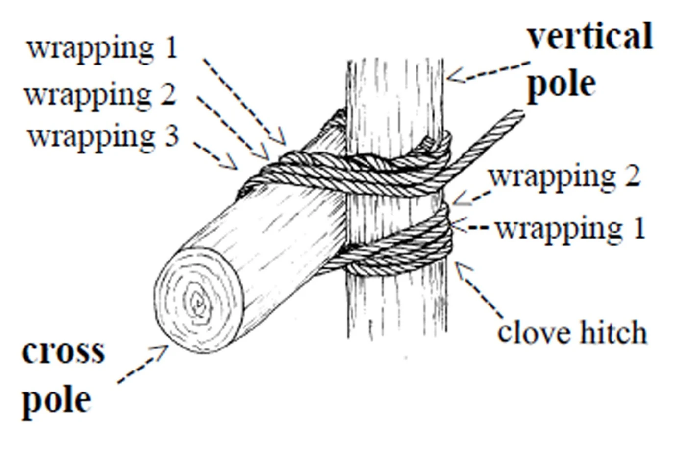
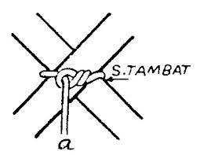
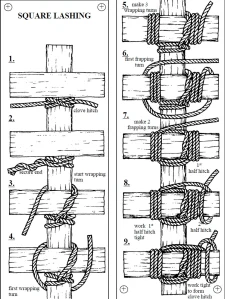
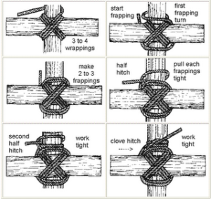
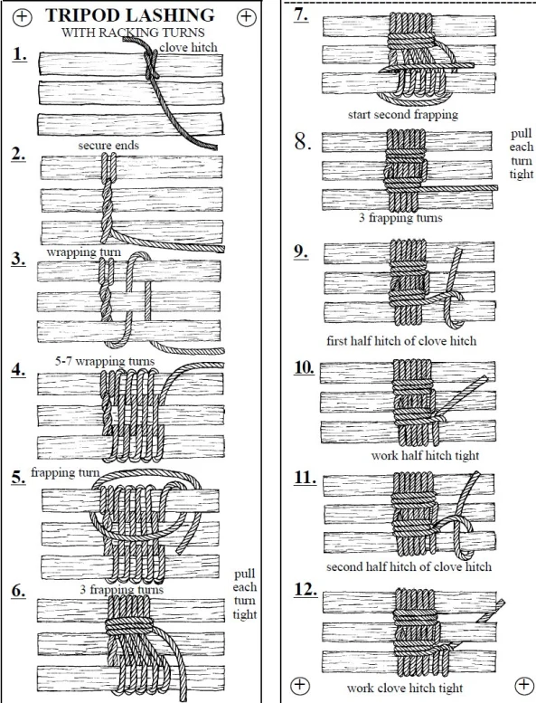

Pionering beserta tips-tipsnya
Pionering adalah salah satu teknik kepramukaan yang mempelajari tentang pembuatan model suatu objek dengan menggunakan peralatan tongkat, tali, maupun stik(tongkat ukurang pendek)(Fuadi,2012). Model-model yang dibuat dalam pionering yang sederhana misalnya adalah berupa bentuk jemuran, bintang, dragbar, tiang bendera, dan bentuk sederhana lainnya. Sedangkan bentuk-bentuk yang cukup rumit adalah seperti menara isyarat, menara pengintai, gapura dengan bentuk yang rumit, dan mobil, dan masih banyak lagi. Intinya, dalam pionering sebenarnya hanya terdapat 4 ikatan yaitu ikatan silang, palang, canggah, dan ikatan untuk kaki 3 atau lebih. Yang terpenting adalah kreatifitas dan kemampuan kita dalam pembuatan model yang kita inginkan. Dalam tulisan saya ini akan saya jelaskan definisi dari masing-masing ikatan serta sedikit tips untuk pembuatan ikatan agar lebih rapi dan kuat.
- Ikatan Palang
Ikatan Palang adalah ikatan yang berguna untuk menggabungkan 2 tongkat yang posisinya saling tegak lurus(membentuk sudut mendekati 90derajat). Langkah pertama yang kita lakukan adalah membuat simpul pangkal di salah satu tongkat. Kedua yaitu mulai mengikat tali pada 2 tongkat dengan pola seperti simpul jangkar, namun diarahkan pada 2 tongkat yang saling menimpa. Posisikan tongkat secara tegak lurus satu sama lain dan selama proses mengikatkan tali, tangan kiri kita selain memegang tongkat juga harus memegang tali dengan cara menekannya pada tongkat agar selalu kencang. Lakukan pengikatan idealnya 4 ikatan tiap 1 tongkat. Selanjutnya buatlah pengikatan pada tali yang terletak diantara tongkat sebanyak 3 kali, gunanya yaitu untuk mencekik ikatan yang sudah kita buat. Kemudian buat simpul pangkal untuk tahap akhirnya, bisa juga ditambahkan simpul setengah mati.
palang


- Ikatan Silang
Ikatan palang adalah ikatan yang juga berguna untuk menggabungkan 2 buah tongkat namun dengan posisi tongkat tidak membentuk sudut 90derajat. Langkah pertama adalah buat 1 simpul tambat pada kedua tongkat.

Kemudian mulai ikat tali pada tiap 2 sudut tongkat yang saling bertolak belakang. Pengikatannya yaitu dengan cara melintang sebanyak 4 ikatan. Ulangi pada sisi satunya. Jika sudah, buat pengikatan tali untuk mencekik ikatan yang sudah dibuat. Untuk kekuatan ikatan, gunakan tips diatas(ikatan palang). Langkah akhir adalah membuat simpul pangkal+setengah mati.

- Ikatan canggah(Menyambung Tongkat)
Ikatan Canggah adalah ikatan yang berguna untuk menyambung 2 tongkat yang posisinya saling berpelurus. Ada banyak variasi mengenai pembuatan ikatan canggah. Namun di blog ini saya akan menjelaskan pembuatan ikatan canggah berdasarkan materi di pangkalan saya(ZEVAJAYA.red). Ikatan canggah dapat dilakukan menggunakan tali 5 meter atau 10 meter. Namun untuk efisiensi waktu tali dengan panjang 5 meter sudah cukup. Pertama, tali kita bagi menjadi 2 bagian. Kemudian susun tongkat saling berpelurus dengan overlap kedua tongkat sepanjang 30cm. Posisikan tongkat dilantai, kemudian gunakan setiap bagian tali untuk menyusuk tali masing-masing sisi tongkat yang saling overlap.(Gambar menyusul, akan saya ambilkan foto pembuatan langsung)
- Ikatan kaki 3 atau lebih
Ikatan Kaki Tiga atau Lebih adalah ikatan yang berguna untuk menggabungkan 3 tongkat atau lebih dengan posisi saling sejajar atau sebagian saling berpelurus. Langkah-langkahnya adalah susun tongkat saling berpelurus atau saling sejarar. Kemudian lakukan simpul pangkal pada salah satu tongkat. Langkah selanjutnya adalah mulai mengikta tali pada tongkat sesuai dengan pola anyaman. Lakukan 4 kali agar lebih kuat dan rapi. Setelah itu lakukan pengikatan untuk mencekik ikatan yang sudah dibuat. Langkah terakhir adalah buat simpul pangkal+setengah mati.
